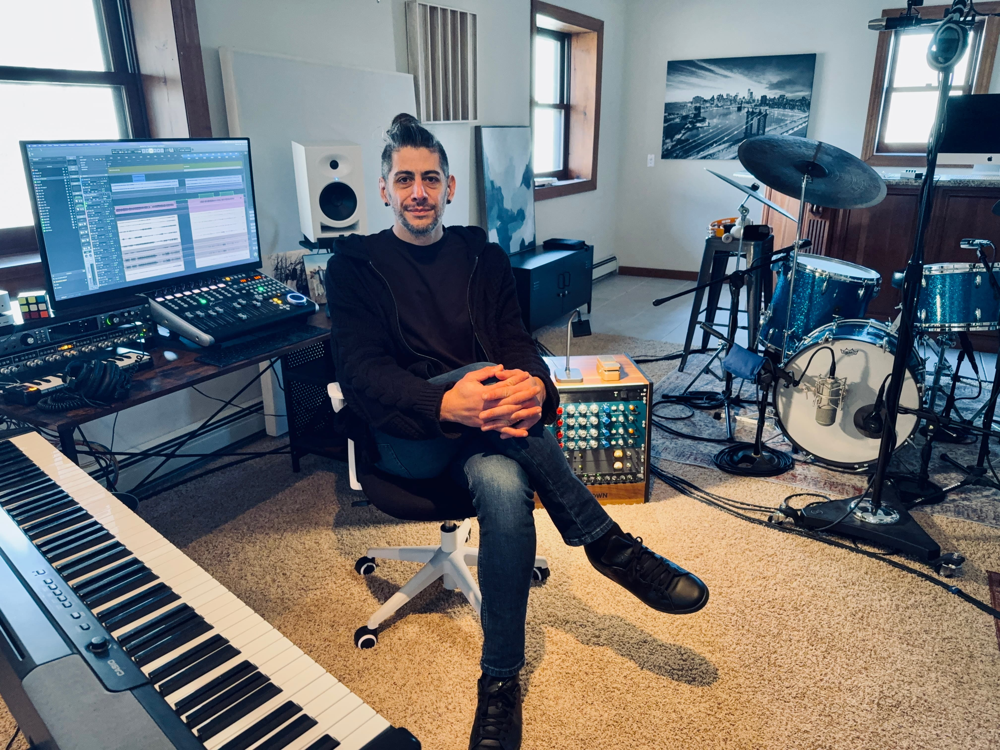

Teaching
Private instruction and academic work
Private drum students, ensemble coaching, curriculum development, and workshops for varied ages and skill levels.
About Matias
I teach from the perspective of a working musician: sound, time, listening, discipline, creativity, and real musical communication.

Career background
My professional path began at the Escuela de Música de Buenos Aires (EMBA), where I received a merit-based scholarship and earned a Professional Musician degree.
Since then I have taught private students, supported ensembles, led jazz workshops internationally, toured across Argentina, Chile, Belize, and the United States, and recorded drums for artists and projects around the world.
Teaching
Private drum students, ensemble coaching, curriculum development, and workshops for varied ages and skill levels.
Performance
International festivals, musical theater productions, live sessions, and collaborations across jazz, indie, and contemporary music.
Studio
Hundreds of recorded drum parts, mixing, production, and composition work for artists, games, and independent records.

Why that matters for students
Technique matters, but students also need to understand time, feel, dynamics, listening, and how music works with other people.
That is the thread connecting my teaching, performance, and studio work. Lessons are structured, but always connected to real music.